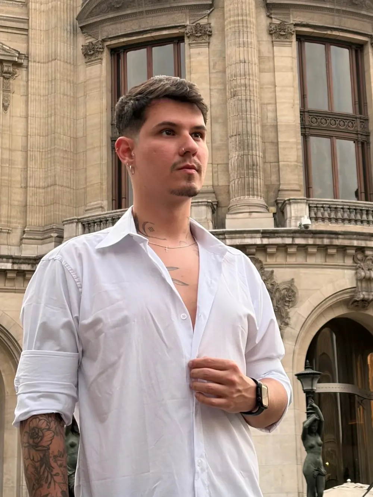

Projetos recentes

Erick Bottega — O artista por trás da Bottega Ink
Sou Erick Bottega, tatuador e criador da Bottega Ink, em Florianópolis. Minha trajetória começou na arquitetura, onde desenvolvi um olhar atento às proporções, à composição e aos detalhes. Encontrei na tatuagem uma forma mais pessoal de transformar ideias e histórias em arte.
Minha especialidade é o Fineline, mas também trabalho com Sketch, Blackwork e composições em preto e vermelho. Acredito que cada tatuagem deve representar a identidade de quem a carrega. Por isso, valorizo a escuta, a criação personalizada e um atendimento próximo e acolhedor.
@bottegainkAvaliações do Google
Veja o que os clientes contam depois de tatuar na Bottega Ink.
Quanto custa uma tatuagem com Erick Bottega?
Os trabalhos variam, em média, de R$ 650 a R$ 1.200. Para projetos maiores, os valores começam em R$ 1.500. Já para tatuagens menores, o valor mínimo é de R$ 300.
Solicite seu orçamento se cadastrando abaixo